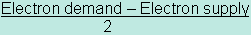
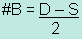
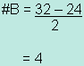
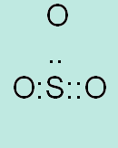
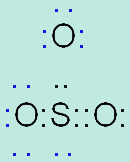

Unit 1: Matter, Chemical Bonding, and Chemical Trends
Activity 5: Chemical Bonds, Lewis Diagrams and Physical Properties of Ionic and Molecular Compounds
Content
Lewis Dot Diagrams and Molecular Compounds
Molecular compounds consist of two non-metals. The atoms will share electrons. A covalent bond with a pair of shared electrons is a single bond. A covalent bond with two pairs of shared electrons is a double bond. A covalent bond with three pairs of shared electrons is a triple bond.
When the two elements in the compound are dissimilar, the covalent bond will be polar. The element with the higher electronegativity value will obtain a partial negative charge and conversely the element with the lower electronegativity value will achieve a partial positive charge.
Usually, but not always, there will be an atom that will be in the middle of the molecule. The single atom of an element in the compounds should give you a clue that it is the middle atom with the other atoms surrounding it. The steps involved in drawing Lewis dot diagrams for molecular compounds and the look of the final answer are different than those for ionic compounds.
 Sample Challenging Question
Sample Challenging Question
Draw the Lewis dot diagram for SO3.
 Sample Solution
Sample Solution
Pay close attention to the steps in this sample solution.
Step 1 Determine the number of covalent bonds (#B) in the compound by performing the following:
- Find the total demand (D) of electrons.
Each atom requires 8 electrons. Do the following:
In SO3,
1 Sulphur - demands - 1 (atom) x 8 electrons = 8
3 Oxygen - demands - 3 (atoms) x 8 electrons = 24
Total Demand (D) = 32
- Find the total supply of electrons (S).
Each atom brings its own number of valence electrons. Do the following:
1 Sulphur - contributes - 1 (atom) x 6 valence electrons = 6
3 Oxygen - contributes - 3 (atoms) x 6 valence electrons = 18
Total Supply (S) = 24
- Calculate the number of covalent bonds by using the following formula:
Number of covalent bonds = 

Substituting the D and S values into the formula, you get

Therefore, there are 4 covalent bonds in the molecule. A total of 8 electrons will be bonding.
Step 2 Determine the central atom.
- Since the sulphur is the single atom in the molecule, the oxygen atoms will be bonded to the sulphur.
Step 3 Draw the dots, representing electrons that make up the bonds.

Note: Notice that one of the bonds is a double bond.
Step 4 Fill in an octet arrangement of paired dots around each atom.
The Lewis dot diagram for SO3 is
Step 5 If you are asked to show the partial charges of the respective atoms, then you should take note of their electronegative values and then write in δ+ and δ- beside the least electronegative atom and most electronegative atom, respectively. In this case, δ+ is written beside the sulphur atom and δ- is written beside each of the oxygen atoms.
Tips
Take note of the following tips for drawing Lewis diagrams.
- Boron will accept an electronic configuration of six electrons in its compound.
- Hydrogen will only demand 2 electrons. Not 8!
- Examine the Lewis dot diagram for SO3. Count the number of electrons (dots). Do they remind you of something. If you said that the total equals the calculated supply (S) of electrons, then you are correct. The number of electrons in your diagram should equal the calculated supply number (S).
- In a binary compound, there will not be a “central” atom and so you will draw the atoms side by side in the diagram.
- If the central atom needs electrons to fill its octet and the number of bonds have been filled, then these electrons are lone pairs of electrons and are not bonded to another atom.
 Practice Exercise
Practice Exercise
- Draw the Lewis dot diagram for O2.
 Answer
Answer
- What type of covalent bond is this?
Answer
- Try drawing the Lewis dot diagram for each of the following ionic and molecular compounds and in the case of molecular compounds, show the partial charges:
Remember: Classify each as an ionic or molecular compound.
- Ca3P2
- Al2O3
- BaO
- LiF
- BaF2
- NH3
- BF3
- CH4
- N2,
- PCl3
Answer
 Resources
Resources
This is a disclaimer. External Resources will open in a new window. Not responsible for external content.
Unless otherwise indicated, all images in this Activity are from the public domain or are © clipart.com or Microsoft clipart and are used with permission.